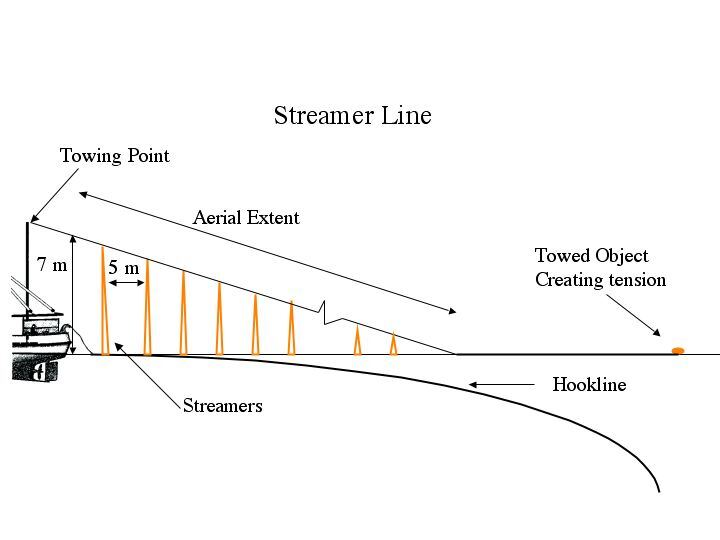
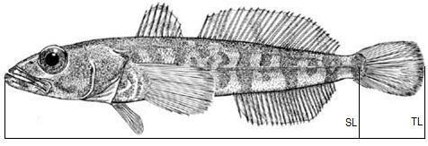
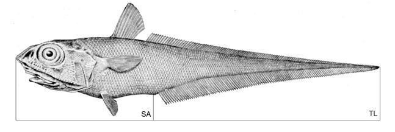
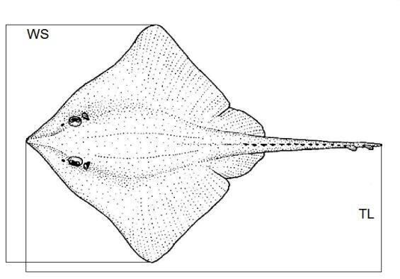
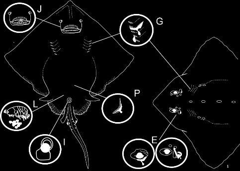

Форми та інструкції
4.1 Інструкція з електронного ярусного журналу, версія OL_v2026 — вступ
2026 Observer Longline Logbook Instructions.pdf
↗ Відкрити
⬇ Завантажити
Журнал складається з 12 робочих аркушів. Короткий огляд призначення кожного (детальний повний текст — у розділі 4.2 нижче):
| Аркуш | Опис |
|---|---|
| Vessel and Gear | Дані судна (номер IMO, назва, позивний), характеристики знаряддя лову, деталі стример-ліній (за CM 25-02 Annex A). |
| Set and Haul Details | Деталі кожної постановки/виборки: наскрізний унікальний номер Set/Haul ID, час у UTC, координати. |
| Observed Haul Catch | Спостереження вилову й прилову під час випадкового облікового періоду (рекомендовано 25% на спостерігача); поля хижацтва (голови/губи з ознаками хижацтва). |
| Haul IMAF | Прилов морських птахів і ссавців під час виборки; фіксація спостережуваності, виду, долі тварини. |
| Marine Mammal Observation | Спостереження морських ссавців протягом того ж облікового періоду; ознаки депредації, чисельність (мін./макс.). |
| Haul VME | Дані з індикаторних таксонів ВМЕ по сегментах лінії (1000 гачків або 1200 м); випадкова вибірка ~30% сегментів + усі сегменти з ≥5 одиницями-тригерами. |
| Biological Sampling | Біологічний відбір проб: довжина, вага, стать, стадія зрілості, отоліти; норма — ~7 риб/1000 гачків (35 риб на лінію), з них 10 з отолітами. |
| Conversion Factors | Тест коефіцієнта переведення: не менше 20 риб на район управління, повторювати щотижня. |
| Tagging | Мічення клича та скатів спостерігачем або навченим членом екіпажу; умовне форматування підсвічує дублікати номерів міток. |
| Tag Recapture | Дані повторного вилову мічених риб: фотографія мітки на шаблоні-лінійці CCAMLR, біологічні виміри. |
| Waste Disposal | Втрата/скидання знарядь лову й відходів (випадково/навмисно); частота (нерегулярно/щотижня/щодня). |
| IUU Sightings | Спостереження невідомих знарядь, сміття або суден, підозрюваних у ННН-промислі. |
The following instructions cover the 2026 version of the CCAMLR SISO Observer Longline logbook, an excel based series of datasheets which SISO observers are required to complete. Even if you are familiar with CCAMLR excel logbooks, please take time to browse through these instructions as the format and content of the longline logbook has changed significantly from previous versions.
General comments that apply to the whole logbook are as follows:
- Data can only be entered into cells with a white background. All other areas of the logbook are locked and cannot be edited. You can fill down data for fields where repetitive information is required to be entered (for example the Haul number for each bycatch record).
- There are numerous data validations and format restrictions that have been applied to data fields. For example the Haul ID field which exists in several worksheets can only be entered as a whole number, and date and time fields must be entered in the format specified. If you attempt to enter an incorrect data type an error message will be displayed with an explanation of why the value cannot be entered.
- In many fields observers select from a series of predefined descriptions of the event appropriate to the data field. This replaces the single letter or number codes that were used in older versions of the logbooks. This makes the logbook much more straightforward to use.
- Comment fields have mostly been removed from the logbook. This is to minimize the unstructured data contained in the logbook. Where comments may be required you can often select an option that refers to the cruise report, in which you can describe the issue in detail and include photos or diagrams if necessary.
- For species and processing codes, drop down reference lists have been included at the top of the sheet, these are cells with a light green background.
In addition to these instructions there is an extensive list of observer resources on the CCAMLR Observer Information webpage. In particular the common fish species bycatch guide, the toothfish and skate tagging guide, and the Vulnerable Marine Ecosystem Taxa Classification Guide should be downloaded for reference if these have not been issued to you by your technical coordinator.
Ці інструкції охоплюють версію 2026 електронного журналу спостерігача ярусного лову CCAMLR SISO — серію таблиць Excel, які зобов'язані заповнювати спостерігачі SISO. Навіть якщо ви вже знайомі з електронними журналами CCAMLR, знайдіть час переглянути ці інструкції: формат і зміст ярусного журналу суттєво змінилися порівняно з попередніми версіями.
Загальні зауваження, що стосуються всього журналу:
- Дані можна вводити лише в клітинки з білим фоном. Усі інші області журналу заблоковані для редагування. Можна протягувати (fill down) дані для полів, де потрібно повторити однакову інформацію (наприклад, номер виборки для кожного запису прилову).
- До полів даних застосовано численні перевірки та обмеження формату. Наприклад, поле Haul ID, наявне на кількох аркушах, можна ввести лише як ціле число, а поля дати й часу — лише у вказаному форматі. Якщо спробувати ввести неправильний тип даних, з'явиться повідомлення про помилку з поясненням, чому значення не приймається.
- У багатьох полях спостерігачі обирають зі списку наперед визначених описів події, що відповідають полю даних. Це замінює однолітерні чи цифрові коди, які використовувалися в старіших версіях журналів, і робить журнал значно простішим у використанні.
- Поля коментарів здебільшого прибрано з журналу, щоб мінімізувати неструктуровані дані в ньому. Там, де коментар може знадобитися, часто можна обрати варіант, що відсилає до звіту про рейс, де можна детально описати проблему й додати фото чи схеми за потреби.
- Для кодів видів і переробки на початку аркуша розміщено випадаючі довідкові списки — це клітинки зі світло-зеленим фоном.
Окрім цих інструкцій, на сторінці CCAMLR Observer Information є розширений перелік ресурсів для спостерігачів. Зокрема, рекомендується завантажити для довідки (якщо їх не надав технічний координатор): визначник поширених видів прилову, посібник з мічення клича й скатів та Визначник таксонів вразливих морських екосистем (VME).
4.2 Повний текст інструкції за кожним аркушем (оригінал англійською + переклад)
1. Worksheet — Vessel and Gear
Vessel and Observer Details: To populate the vessel details please enter the vessel IMO number the vessel name and call sign into the appropriate cells.
Fishing Gear Details: Upon notification by your technical coordinator of your upcoming CCAMLR trip, the Secretariat or your technical coordinator can provide a copy of the vessel notification details which include gear type and characteristics (anyone with an authorized CCAMLR login can view vessel details on the CCAMLR website). Please check these when on board the vessel to ensure that they are correct. If there are differences in the gear type and configuration please describe them in your cruise report. Weigh at least 30 line weights at random for Spanish and Trotline gear configurations and report your results.
Streamer Line Details: The required configuration for streamer lines in the CCAMLR area is described in Conservation Measure 25-02 Annex A. If the streamer line(s) on the vessel conform to this configuration please fill in the required fields, and only report data in the final section (section 6) if the line is replaced during fishing, or if the streamer line does not conform to CCAMLR specifications. Figure 1 demonstrates the spacing measurements you are required to record if the line is of a non-CCAMLR configuration.
Дані судна та спостерігача: щоб заповнити дані судна, введіть номер IMO судна, назву судна та позивний у відповідні клітинки.
Дані знаряддя лову: після повідомлення технічного координатора про майбутній рейс CCAMLR, Секретаріат або технічний координатор можуть надати копію даних нотифікації судна, що включають тип і характеристики знаряддя (будь-хто з авторизованим логіном CCAMLR може переглянути дані суден на сайті CCAMLR). Перевірте ці дані на борту судна, щоб переконатися в їх правильності. Якщо є відмінності в типі чи конфігурації знаряддя, опишіть їх у звіті про рейс. Зважте щонайменше 30 випадково обраних вантажів лінії для конфігурацій «іспанська снасть» і «тротлайн» та повідомте результати.
Дані стример-лінії: необхідна конфігурація стример-ліній у зоні дії CCAMLR описана в Заході зі збереження 25-02, Додаток A. Якщо стример-лінія(ї) судна відповідає цій конфігурації, заповніть відповідні поля, і повідомляйте дані в останньому розділі (розділ 6) лише якщо лінію замінили під час промислу, або якщо стример-лінія не відповідає специфікаціям CCAMLR. Рисунок 1 демонструє виміри відстаней, які потрібно зафіксувати, якщо лінія має конфігурацію, що не відповідає CCAMLR.

2. Worksheet — Set and Haul Details
This sheet records details for each set and haul that take place during your cruise. The field Set/Haul ID (which is also included in other worksheets as Haul ID) should be a consecutive, unique number that matches the Haul ID used by the vessel for their commercial data forms. Please fill in all other set and haul details, even if you conduct no catch, bycatch or other observations during their operation. Fill in all other fields as appropriate, selecting an option from the drop-down menus for some fields. Please note that in these forms all times are to be recorded in UTC, rather than local ship time.
Цей аркуш фіксує деталі кожної постановки та виборки, що відбуваються протягом рейсу. Поле Set/Haul ID (яке також присутнє на інших аркушах як Haul ID) має бути послідовним унікальним номером, що збігається з Haul ID, який судно використовує у своїх комерційних формах даних. Заповніть усі інші деталі постановки й виборки, навіть якщо під час операції не було вилову, прилову чи інших спостережень. Заповніть усі інші поля відповідно до ситуації, обираючи варіант із випадаючих списків там, де це потрібно. Зверніть увагу: в цих формах увесь час записується в UTC, а не за місцевим судновим часом.
3. Worksheet — Observed Haul Catch
This sheet is for all catch and bycatch species observations that you conduct on deck during your random tally period. Because of the necessity to collect biological material (bycatch species, dead birds etc.) and observe line drop offs, the observer's work station for line hauling should obviously be situated with this in mind. The recommended observation period of a haul is 25% per observer present on the vessel. It is very important to establish a sampling routine such that observations of line-hauling operations cover varying sections of the longline throughout the cruise. The evidence of predation fields are new additions to the 2018 logbook. Specifically, the number of heads with obvious portion(s) of the body removed by predators, and hooks with just lips present on them for any species, are to be tallied for addition to these fields. This information will be used to provide metrics for quantifying the level of, and types of predation that are occurring.
Цей аркуш призначений для всіх спостережень за виловом і приловом, які ви проводите на палубі протягом випадкового облікового періоду. Через необхідність збору біологічного матеріалу (види прилову, мертві птахи тощо) та спостереження за випадінням риби з лінії, робоче місце спостерігача під час виборки лінії, очевидно, має бути обране з урахуванням цього. Рекомендований період спостереження виборки — 25% на кожного спостерігача, присутнього на судні. Дуже важливо встановити регулярний режим вибірки так, щоб спостереження за виборкою лінії охоплювали різні секції ярусу протягом усього рейсу. Поля «ознак хижацтва» — нове доповнення журналу з 2018 року. Зокрема, потрібно підраховувати кількість голів з очевидно вилученими хижаком частинами тіла та гачки лише з губами риби (без тіла) для будь-якого виду — ці дані заносяться до відповідних полів. Ця інформація використовується для кількісної оцінки рівня та типів хижацтва, що трапляється.
4. Worksheet — Haul IMAF
Seabird and marine mammal by-catch: Assessing bird catch rates during the haul can only be done accurately by observations made from the outside working deck, because on many vessels a work station on the ship's bridge or factory can obscure visibility. Data-recording tasks to be carried out during longline hauling include observations of seabirds caught on longlines and collection of seabird samples. Observers must record whether they actually sighted the bird come on board during their random bycatch tally period (by selecting yes in the observed field), or if they were given the animal, or the information, by a crew member. This information is very important as the number of seabirds caught during the random bycatch tally period are used to calculate extrapolated mortality figures.
For each bird or mammal hauled on board, record if its capture was during line setting or line hauling (birds hooked during hauling are usually alive and do not have waterlogged feathers), species and fate of the animal. Refer to the identification plates for Southern Ocean seabirds given in the book Fish the Sea, Not the Sky (CCAMLR, 1996).
Seabirds that are taken aboard dead may be retained as frozen samples if required by your organization. Label the sample with the date, time taken aboard, species, vessel name, observer's name and a label number which corresponds to that used on the Haul IMAF data sheet. All birds should be checked for bands upon landing. Look at your assignment issued by your employing organization for information on the handling of collected bird samples and/or bands for when you disembark the vessel.
Прилов морських птахів і ссавців: точно оцінити рівень вилову птахів під час виборки можна лише за спостереженнями із зовнішньої робочої палуби, оскільки на багатьох суднах робоче місце на містку чи в цеху обмежує видимість. Завдання з фіксації даних під час виборки ярусу включають спостереження за морськими птахами, спійманими на ярусі, та збір зразків птахів. Спостерігачі повинні фіксувати, чи вони особисто побачили, як птах потрапив на борт протягом випадкового облікового періоду прилову (обравши «так» у полі «Observed»), чи тварину/інформацію їм передав член екіпажу. Ця інформація дуже важлива, оскільки кількість морських птахів, спійманих протягом випадкового облікового періоду, використовується для розрахунку екстрапольованих показників смертності.
Для кожного птаха чи ссавця, піднятого на борт, фіксуйте, чи стався вилов під час постановки чи виборки лінії (птахи, гачковані під час виборки, зазвичай живі й не мають намоклого пір'я), вид і подальшу долю тварини. Звертайтеся до таблиць визначення морських птахів Південного океану з книги «Fish the Sea, Not the Sky» (CCAMLR, 1996).
Морських птахів, піднятих на борт мертвими, можна зберігати як заморожені зразки, якщо цього вимагає ваша організація. Підпишіть зразок датою, часом підйому на борт, видом, назвою судна, ім'ям спостерігача та номером етикетки, що відповідає номеру в аркуші даних Haul IMAF. Усіх птахів слід перевіряти на наявність кілець при вивантаженні. Ознайомтеся з інструкціями вашої організації-роботодавця щодо поводження зі зібраними зразками птахів та/або кільцями під час висадки із судна.
5. Worksheet — Marine Mammal Observation
This worksheet is a new addition to the observer logbook, and has been adapted from marine mammal observation programmes undertaken by national observers in the French EEZ fisheries, and around South Georgia. Marine Mammal observations should be recorded during the same random line observation period in which the Observed Haul Catch data is collected. Please fill in all appropriate fields when you conduct, or attempt to conduct a Marine Mammal Observation, not just when the presence of marine mammals is detected. Information on fields in the worksheet is as follows:
Observation Possible: Select no if poor weather, fog, or lack of light prevents an observation being conducted.
Depredation Observed: Select yes if obvious signs of depredation behaviour are being observed, or if fish are seen being hauled with obvious depredation marks. Behaviour examples might be seals diving around the line or seen taking fish, or cetaceans diving repeatedly near the line.
Presence or Absence: Select presence if you observe marine mammals, or if you do not sight them but can hear them (e.g. whale blows, or seals barking).
Time first observed: Please enter the time in UTC of the first marine mammal observation.
Species Code: Please enter the lowest taxonomic species code to which you can identify mammals, e.g. enter baleen whales if that is all you can identify.
Minimum and Maximum numbers observed: This is to provide an estimate of abundance for each observation of marine mammal activity. Therefore if you initially see one mammal during your observation, and then observe several animals, enter the minimum and maximum numbers.
Цей аркуш — нове доповнення до журналу спостерігача, адаптоване з програм спостереження за морськими ссавцями, які проводили національні спостерігачі в риболовних зонах Франції (виключна економічна зона) та навколо Південної Джорджії. Спостереження за морськими ссавцями слід фіксувати протягом того самого випадкового облікового періоду лінії, під час якого збираються дані Observed Haul Catch. Заповнюйте всі відповідні поля щоразу, коли ви проводите або намагаєтеся провести спостереження за морськими ссавцями, а не лише тоді, коли виявлено їх присутність. Пояснення полів аркуша:
Observation Possible (спостереження можливе): оберіть «ні», якщо погана погода, туман або недостатнє освітлення унеможливлюють проведення спостереження.
Depredation Observed (спостережено хижацтво): оберіть «так», якщо спостерігаються явні ознаки хижацької поведінки, або якщо піднята риба має очевидні сліди хижацтва. Приклади поведінки: тюлені пірнають біля лінії або їх бачили, як вони забирають рибу, або китоподібні неодноразово пірнають поблизу лінії.
Presence or Absence (наявність/відсутність): оберіть «наявність», якщо ви спостерігаєте морських ссавців, або якщо не бачите їх, але чуєте (наприклад, видих кита чи гавкіт тюленів).
Time first observed (час першого спостереження): введіть час у UTC першого спостереження морського ссавця.
Species Code (код виду): введіть найнижчий таксономічний рівень, до якого можете визначити ссавця, наприклад «вусаті кити», якщо точніше визначити не вдається.
Minimum and Maximum numbers observed (мінімальна й максимальна чисельність): це оцінка чисельності для кожного спостереження активності морських ссавців. Тобто якщо спочатку ви побачили одну тварину, а потім кілька — введіть мінімальне й максимальне число.
6. Worksheet — Haul VME
This sheet is for recording data on Vulnerable Marine Ecosystem (VME)-indicator organisms where required under Conservation Measure 22-06. The vessel is required to divide each longline or pot line into line segments: "Line segment" means a 1 000-hook section of line or a 1200m section of line, whichever is the shorter, and for pot lines a 1200m section. It is strongly recommended that a colour-coding or other system is used for marking each line section, so that crew, master and observer are able to tell which line segment is being hauled.
The vessel will retain all VME-indicator organisms for each line segment in the 10-litre bucket. Some vessels may be able to retain the contents of each bucket for every line segment. Where this is not the case and unless the bucket needs to be retained (i.e. if it has more than 5 VME-indicator units of VME-indicator organisms or if the observer has requested it as part of their random sample) the vessel may place its contents into a larger bin after hauling each line segment, in order that the total number of VME-indicator organisms can be counted.
The observed bucket unit should be selected from the drop-down menu. A VME-indicator unit means a quantity of VME-indicator organisms of those found in the CCAMLR VME Taxa Classification Guide, measured as either one litre for those VME-indicator organisms that can be placed in a 10 litre container; or one kilogram of those VME-indicator organisms that do not fit into a volume measurement, such as branching species (e.g. Gorgonians). Please note that because of the new design of the VME sheet, if you record multiple species on a line segment, all of the yellow fields on the worksheet are repeated for each recorded taxa. You can easily copy and fill down the data for each species.
The observer should sample the following buckets: (i) a random sample of approximately 30% of the line segments; and (ii) every line segment that collects 5 or more VME-indicator units of VME-indicator organisms, known as the trigger level. In order to separate the requirements of random sampling from trigger sampling, observers should inform the crew at the start of a line hauling period of the individual random line segments for which a bucket of VME-indicator organisms should be retained. Each randomly sampled bucket should be put to one side by the crew, and clearly labelled by its line segment number. The master should be informed of the random sample requirements, so that the mid-point coordinates of the requested random line segments can be recorded in your logbook. All these buckets should be examined by the observer as part of the random sample and entered as "Random" in the Sample Type field on the form. In addition the observer should require the crew to retain buckets from any other line segment where more than 5 VME-indicator units of VME-indicator organisms were recovered. All line segments from which 5 or more VME-indicator units of VME-indicator organisms were recovered will need to be monitored. All of these buckets should also be set aside by the crew and clearly labelled by its line segment number, so that the mid-point of the line segment can be recorded and will need to be examined by the observer and entered as sample type "Trigger" on the form. Do not confuse random and required sampling. If a random sample happens to be greater than 5 VME-indicator units, still enter on the form as 'random'.
Цей аркуш призначений для запису даних про організми-індикатори вразливих морських екосистем (ВМЕ) там, де це вимагається Заходом зі збереження 22-06. Судно зобов'язане поділити кожен ярус чи лінію пасток на сегменти лінії: «сегмент лінії» означає секцію лінії на 1000 гачків або секцію 1200 м (яка коротша), а для ліній пасток — секцію 1200 м. Наполегливо рекомендується використовувати кольорове маркування чи іншу систему позначення кожної секції лінії, щоб екіпаж, капітан і спостерігач могли визначити, який сегмент лінії виводиться.
Судно зберігає всі організми-індикатори ВМЕ з кожного сегмента лінії в 10-літровому відрі. Деякі судна можуть зберігати вміст кожного відра для кожного сегмента лінії. Якщо це неможливо і відро не потрібно зберігати (тобто якщо в ньому менше 5 одиниць-індикаторів ВМЕ або спостерігач не запросив його як частину випадкової вибірки), судно може перекласти вміст у більший контейнер після виборки кожного сегмента лінії, щоб можна було порахувати загальну кількість організмів-індикаторів ВМЕ.
Спостережувану одиницю відра слід обирати з випадаючого списку. Одиниця-індикатор ВМЕ означає кількість організмів-індикаторів ВМЕ з переліку у Визначнику таксонів ВМЕ CCAMLR, виміряну або як 1 літр для тих організмів, що вміщуються в 10-літровий контейнер, або як 1 кілограм для тих, що не піддаються об'ємному виміру, наприклад, гіллястих видів (наприклад, горгонарій). Зверніть увагу: через новий дизайн аркуша VME, якщо ви фіксуєте кілька видів на одному сегменті лінії, усі жовті поля аркуша повторюються для кожного зафіксованого таксона. Дані для кожного виду можна легко скопіювати й протягнути.
Спостерігач повинен відібрати проби з таких відер: (i) випадкова вибірка приблизно 30% сегментів лінії; та (ii) кожен сегмент лінії, з якого зібрано 5 або більше одиниць-індикаторів ВМЕ — це називається тригерним рівнем. Щоб розділити вимоги випадкової та тригерної вибірки, спостерігачам слід повідомляти екіпаж на початку періоду виборки лінії про конкретні випадкові сегменти лінії, з яких потрібно зберегти відро з організмами-індикаторами ВМЕ. Кожне відро випадкової вибірки екіпаж повинен відкласти окремо й чітко підписати номером сегмента лінії. Капітана слід повідомити про вимоги випадкової вибірки, щоб координати середини запитаних випадкових сегментів лінії можна було зафіксувати в журналі. Усі ці відра має оглянути спостерігач як частину випадкової вибірки та внести в поле «Sample Type» форми як «Random». Крім того, спостерігач повинен вимагати від екіпажу зберігати відра з будь-якого іншого сегмента лінії, де було зібрано понад 5 одиниць-індикаторів ВМЕ. Усі сегменти лінії, з яких зібрано 5 або більше одиниць-індикаторів ВМЕ, потрібно контролювати. Ці відра екіпаж також повинен відкласти окремо й чітко підписати номером сегмента лінії, щоб можна було зафіксувати середину сегмента; їх має оглянути спостерігач і внести в поле «Sample Type» як «Trigger». Не плутайте випадкову та обов'язкову (тригерну) вибірку. Якщо випадкова проба виявилася більшою за 5 одиниць-індикаторів, все одно вносьте її в форму як «random».
7. Worksheet — Biological Sampling
A representative sample of fish should be taken from each haul to record biological data characteristics (e.g. length, weight, sex, etc.). Sampling requirements for toothfish described here can be found on the observer sampling requirements webpage.
The guide on the sampling rate for toothfish should be approximately 7 fish per 1000 hooks, or an overall total of 35 fish per line (assuming an average line of 5 000 hooks). Of these 35 fish, observers should sample 10 fish per line recording species, total length, sex, gonad stage, total weight and collecting 10 otoliths; and 25 fish per line recording just the biological measurements (i.e. not collecting otoliths). The sampling rates are based on an average number of hooks per set. When vessels set shorter lines with a 'join line' (e.g. to reduce the number of downlines and buoys on the surface that could be caught in ice), they are now required to report them as a single haul, therefore the sampling requirements should also treat joined short lines as if they are one single continuous piece of fishing gear.
To collect a representative sample of all other species, select fish that cover the whole size range of each species caught. If possible sample up to 10 individuals per day for each bycatch species, or up to 100 individuals per bycatch species for your cruise. To estimate the number and location on the line of hooks relating to each Dissostichus spp. sub-sample, the number, or range of the baskets, trots or magazines numbers relating to where the bycatch fish are being sampled from must be recorded. Baskets, trots and magazines should be numbered from 1, where 1 is the first basket, trot or magazine set. It is very important to sample all sections of the longline throughout your cruise.
For all fish measurements ensure that the snout of the fish is butted up to the end of the measuring board, the mouth is closed and the body is straight. If possible record the weight, sex and maturity stage for each individual sampled, and if otoliths are collected ensure they have a unique serial number. Fields are provided for any biological samples that are taken from fish. Please note the fish serial number field in column D is optional, and is provided for the observer's benefit as serial numbers are often used when recording measurements and taking samples.
For Toothfish (and most other fish with a distinct tail) measure for standard (SL) and total length (TL). Standard length (SL) is measured from the most anterior part of the snout to the end of the vertebral column. An easy way to determine SL is to bend the tail upwards and a crease will form at the point of the last caudal vertebra. Total length (TL) is defined as the distance from the most anterior part of the snout to the furthest tip of the tail. Lightly 'streamline' the tail before measuring: i.e. the tail should not be spread to its extreme, nor completely compressed.
For Macrourus spp. total length and snout to anus (SA) length should also be measured from the tip of the snout to the anus. For skates and rays the wingspan (WS) total length should also be measured.
For cruises conducted in Subareas 88.1 and 88.2 SSRUs A & B, to contribute to the Ross Sea Data Collection plan observers are requested to record injuries from biologically sampled skate species, as well as skates that are tagged and released, and recaptured. Up to three injury fields can be completed using the skate injury codes (see table below).
Репрезентативну вибірку риби слід брати з кожної виборки для фіксації біологічних характеристик (довжина, вага, стать тощо). Вимоги до відбору проб клича описані на сторінці вимог до вибірки спостерігача на сайті CCAMLR.
Орієнтовна норма відбору проб клича — приблизно 7 риб на 1000 гачків, або загалом 35 риб на лінію (за умови середньої лінії на 5000 гачків). З цих 35 риб спостерігачі мають відібрати 10 риб на лінію з повним записом виду, загальної довжини, статі, стадії зрілості гонад, загальної ваги та відбором 10 отолітів; і 25 риб на лінію лише з біологічними промірами (без відбору отолітів). Норми відбору базуються на середній кількості гачків на постановку. Якщо судна ставлять коротші лінії, з'єднані «join line» (наприклад, щоб зменшити кількість вертикальних лінок і буїв на поверхні, які може захопити лід), тепер їх потрібно звітувати як одну виборку, тому вимоги до відбору проб також слід застосовувати до з'єднаних коротких ліній як до єдиного суцільного знаряддя лову.
Щоб зібрати репрезентативну вибірку всіх інших видів, обирайте рибу, що охоплює весь діапазон розмірів кожного впійманого виду. За можливості відбирайте до 10 екземплярів на день для кожного виду прилову, або до 100 екземплярів на вид прилову за весь рейс. Щоб оцінити кількість і розташування на лінії гачків, що стосуються кожної суб-вибірки Dissostichus spp., потрібно фіксувати номер або діапазон номерів кошиків, тротів чи магазинів, звідки відбирається риба прилову. Кошики, троти й магазини нумеруються з 1, де 1 — перший поставлений кошик, трот чи магазин. Дуже важливо відбирати проби з усіх секцій ярусу протягом усього рейсу.
Для всіх промірів риби переконайтеся, що писок риби впирається в кінець вимірювальної дошки, рот закритий, а тіло випрямлене. За можливості фіксуйте вагу, стать і стадію зрілості для кожного відібраного екземпляра, а якщо відбираються отоліти — переконайтеся, що вони мають унікальний серійний номер. Передбачені поля для будь-яких біологічних зразків, взятих з риби. Зверніть увагу: поле серійного номера риби в колонці D необов'язкове й надається для зручності спостерігача, оскільки серійні номери часто використовуються під час записування промірів і взяття зразків.
Для клича (і більшості інших риб з чітко вираженим хвостом) вимірюйте стандартну (SL) і загальну (TL) довжину. Стандартна довжина (SL) вимірюється від найпереднішої точки писка до кінця хребетного стовпа. Простий спосіб визначити SL — злегка зігнути хвіст догори: складка утвориться в точці останнього хвостового хребця. Загальна довжина (TL) визначається як відстань від найпереднішої точки писка до найдальшого кінчика хвоста. Перед виміром злегка «випрямте» хвіст: він не повинен бути ні максимально розправленим, ні повністю стиснутим.
Для Macrourus spp. також слід виміряти загальну довжину та довжину від писка до анусу (SA) — від кінчика писка до анального отвору. Для скатів і промениць також слід виміряти загальну довжину за розмахом крил (WS).
Для рейсів у підрайонах 88.1 та 88.2 SSRU A і B, з метою внеску в план збору даних моря Росса, спостерігачів просять фіксувати травми біологічно відібраних видів скатів, а також скатів, яких мітять і випускають, і повторно виловлених. Можна заповнити до трьох полів травм, використовуючи коди травм скатів (див. таблицю нижче).




Коди травм скатів (Рис. 4)
| Код | Опис |
|---|---|
| 0 | Видимих ушкоджень немає |
| J | Розрив хрящів щелепи або значний розрив тканини навколо рота |
| G | Кровотеча зябер на дорсальній або вентральній поверхні |
| L | Пошкодження від вошей навколо перитонеальної порожнини |
| I | Пролапс кишківника понад 3 см, у т.ч. з кровотечею |
| P | Проникна травма перитонеальної порожнини |
| E | Травма ока або дихальця |
| W | Незначні поверхневі травми шкіри |
| B | Синці на дорсальній або вентральній стороні диска чи хвоста |
| S | Рубцева тканина навколо рота/щелепи від попередньої травми |
8. Worksheet — Conversion Factors
The recommended sampling protocol is to sample at least 20 fish from a haul when (or soon after) entering a management area (any area with a specified catch limit which can be a research block, SSRU or Subarea), and repeating this at least once per week if remaining within this area. To accurately record the measurements for processed fish that you sample adopt the following procedure:
- Record total length and weight of each toothfish to be processed. Length measurements should be taken on the midline of the fish from the tip of the snout to the tail. Fish should be weighed on a motion compensated scale and water must be drained from the stomach prior to weighing (use a sharp knife or tube to achieve this). Weight is recorded in the green weight column.
- Allow the processing crew to cut the fish in the manner adopted by the vessel, then weigh the processed fish and enter into the processed weight column. The worksheet will automatically calculate the conversion factor.
- Complete the rest of the fields on the conversion factor sheet, using the drop-down menus for fields where appropriate. The Grade will be a product quality code used by the factory manager. A description of the grades used during your cruise can be completed in the conversion factor section of your cruise report.
Рекомендований протокол відбору проб — відбирати щонайменше 20 риб з виборки під час (або невдовзі після) входу в район управління (будь-який район з визначеним лімітом вилову — дослідницький блок, SSRU чи підрайон), і повторювати це щонайменше раз на тиждень, якщо судно залишається в цьому районі. Щоб точно зафіксувати проміри переробленої риби з вибірки, дотримуйтеся такої процедури:
- Зафіксуйте загальну довжину й вагу кожного клича, призначеного для переробки. Проміри довжини слід брати по середній лінії риби від кінчика писка до хвоста. Рибу слід зважувати на вазі з компенсацією руху судна, а перед зважуванням обов'язково злити воду зі шлунка (гострим ножем або трубкою). Вага записується в колонку «зелена вага» (green weight).
- Дозвольте обробній бригаді розрізати рибу у спосіб, прийнятий на судні, потім зважте перероблену рибу й внесіть значення в колонку «вага продукту» (processed weight). Аркуш автоматично розрахує коефіцієнт переведення.
- Заповніть решту полів аркуша коефіцієнтів переведення, використовуючи випадаючі списки там, де це доречно. «Grade» — код якості продукту, що використовується технологом цеху. Опис ґрейдів, використаних протягом рейсу, можна навести в розділі коефіцієнтів переведення звіту про рейс.
9. Worksheet — Tagging
A SISO observer or appropriately trained crew member on each longline vessel should tag and release toothfish. As the vessel is responsible for ensuring tagging and tag recovery protocols are correctly followed, several crew will most likely be trained in tagging procedures, however the vessel is expected to cooperate with the observer if you feel the procedures are not being undertaken correctly. Any tagging procedures should follow the CCAMLR toothfish and skate tagging guide and the tagging protocol detailed in Appendix 4 of the SISO Manual – Finfish Fisheries. Fish should never be tagged and released if any of the following characteristics are present:
- Hook injuries are present anywhere on body other than in mouth area
- Gills are pink or white
- Gills have visible bleeding, or if excessive bleeding is present anywhere on fish
- There is visible damage to fish body with open wounds
- There is visible damage to eye or penetration of body cavity, including by crustaceans (amphipods/lice)
- Abrasions or recent scale loss equal to or exceeding the area equivalent to the fish tail is present
- No movement of fish is detected
Complete the tagging worksheet ensuring that the tag ID header fields details are recorded. Note that particular fields are required for skates and rays (see the skate injury codes table). The worksheet contains conditional formatting to highlight if tag numbers are duplicated. Try to ensure accurate tagging release positions are recorded rather than just haul start or end positions. If extra details are required with regard to any tagging information please use the cruise report to detail these, for example if there are frequent tag breakages it is useful to document these in a table.
Спостерігач SISO або належно навчений член екіпажу на кожному ярусному судні повинен мітити та випускати клича. Оскільки судно відповідає за правильне дотримання протоколів мічення й повернення міток, кілька членів екіпажу, найімовірніше, будуть навчені процедурам мічення, однак від судна очікується співпраця зі спостерігачем, якщо ви вважаєте, що процедури виконуються неправильно. Будь-які процедури мічення мають відповідати посібнику CCAMLR з мічення клича й скатів та протоколу мічення, детально описаному в Додатку 4 SISO Manual – Finfish Fisheries. Рибу ніколи не можна мітити й випускати, якщо наявна будь-яка з таких характеристик:
- Гачкові ушкодження є будь-де на тілі, крім ротової області
- Зябра рожеві або білі
- Зябра мають видиму кровотечу, або на рибі присутня надмірна кровотеча будь-де
- Наявне видиме пошкодження тіла риби з відкритими ранами
- Наявне видиме пошкодження ока або проникнення в порожнину тіла, зокрема ракоподібними (бокоплавами/вошами)
- Наявні саднини або нещодавня втрата луски на площі, що дорівнює або перевищує площу хвоста риби
- Рухової активності риби не виявлено
Заповніть аркуш мічення, забезпечивши запис деталей у полях заголовка ID мітки. Зверніть увагу: для скатів і промениць потрібні особливі поля (див. таблицю кодів травм скатів). Аркуш містить умовне форматування, що підсвічує дублікати номерів міток. Намагайтеся фіксувати точні позиції випуску після мічення, а не лише позиції початку чи кінця виборки. Якщо потрібні додаткові деталі щодо будь-якої інформації про мічення, використовуйте звіт про рейс для детального опису — наприклад, якщо трапляються часті поломки міток, корисно задокументувати це в таблиці.
10. Worksheet — Tag Recapture
All tagged fish and skates must be retained by the vessel regardless of their time at liberty, it is good practice to encourage crew to look for tags, particularly as an annual prize is offered by the Coalition of Legal Toothfish Operators (COLTO) for tag finders! For each fish caught an electronic time-stamped photograph must be taken of the tags in situ using the "CCAMLR tag photo template". Please check that the photograph clearly shows the tag numbers and that the number is readable. Attach these photos in your cruise report, or zip up the photos and send them separately to the Secretariat through your technical coordinator. Fill out the required biological measurements in the worksheet, noting the specific fields required for skate and rays and toothfish (see the skate injury codes table). Fields are provided for any biological samples that are taken from fish. The worksheet contains conditional formatting to highlight if tag numbers are duplicated.
Усю мічену рибу й скатів судно повинне зберігати незалежно від часу, проведеного на волі; варто заохочувати екіпаж шукати мітки, тим більше що щорічний приз за знайдені мітки пропонує Coalition of Legal Toothfish Operators (COLTO)! Для кожної впійманої риби потрібно зробити електронне фото міток in situ (на місці) зі штампом часу, використовуючи офіційний фотошаблон CCAMLR («CCAMLR tag photo template»). Перевірте, що на фото чітко видно номери міток і що номер читабельний. Додайте ці фото до звіту про рейс, або запакуйте фото в архів і надішліть окремо до Секретаріату через технічного координатора. Заповніть необхідні біологічні проміри в аркуші, звертаючи увагу на специфічні поля для скатів/промениць і клича (див. таблицю кодів травм скатів). Передбачені поля для будь-яких біологічних зразків, взятих з риби. Аркуш містить умовне форматування, що підсвічує дублікати номерів міток.
11. Worksheet — Waste Disposal
This form is designed to collect summary information relating to the loss, retention and discarding of fishing gear and waste products at sea. Please select the option from the drop-down menu for each field. Definitions for each item are as follows:
Fishing Gear: This refers to all fishing gear that is no longer usable due to damage, loss, or hooks and sections of line that are cut off (e.g. when the line is cut to release a shark or marine mammal).
General Waste: This refers to all other waste such as plastics, metal, packaging material, oil and sewage.
Lost: Refers to gear or waste that was unintentionally swept into the sea; e.g. washed into the sea due to rough weather or the loss of a longline or trawl net etc.
Discarded: Refers to the intentional dumping of gear or waste into the sea; e.g. the dumping of galley waste, plastics or damaged fishing gear.
For items that are either lost or discarded there are three categories to select from regarding the frequency for which this occurs: Occasionally (less than once a week or once a month), Weekly (up to several times a week) and Daily (every day).
The retained column refers to how the waste is retained for disposal back on shore: non-incinerated or incinerated.
Please use your cruise report to detail specific concerns or problems in detail.
Ця форма призначена для збору зведеної інформації щодо втрати, зберігання та скидання знарядь лову й відходів у морі. Оберіть варіант з випадаючого списку для кожного поля. Визначення для кожного пункту:
Fishing Gear (знаряддя лову): стосується будь-якого знаряддя лову, що стало непридатним через пошкодження, втрату, або гачків і секцій лінії, які були відрізані (наприклад, коли лінію обрізають, щоб звільнити акулу чи морського ссавця).
General Waste (загальні відходи): стосується всіх інших відходів, як-от пластик, метал, пакувальні матеріали, нафтопродукти й каналізаційні стоки.
Lost (втрачено): стосується знаряддя чи відходів, ненавмисно змитих у море — наприклад, змитих штормовою погодою, або втрати ярусної чи тралової сітки тощо.
Discarded (скинуто навмисно): стосується навмисного скидання знаряддя чи відходів у море — наприклад, скидання камбузних відходів, пластику чи пошкодженого знаряддя лову.
Для пунктів, які втрачено або скинуто навмисно, є три категорії частоти на вибір: Occasionally (нерегулярно — менше разу на тиждень чи раз на місяць), Weekly (щотижня — до кількох разів на тиждень) і Daily (щодня).
Колонка «retained» (збережено) стосується того, як відходи зберігаються для утилізації на березі: non-incinerated (без спалювання) чи incinerated (спалено).
Використовуйте звіт про рейс, щоб детально описати конкретні занепокоєння чи проблеми.
12. Worksheet — IUU Sightings
This worksheet is for reporting sightings by observers of unknown gear, refuse or vessels, or those vessels suspected to be engaging in IUU fishing activities. Please only include sightings and their details that you personally observe. It is a vessel responsibility to report any IUU sightings to the Secretariat as soon as practicable, however information collected by observers also provides important information, particularly supplementary photographs and comments on vessel appearance and activity.
Fill out the details for each gear or vessel sighting as instructed in the worksheet. If necessary provide a more detailed description in the Cruise Report, as well as attaching photos if any are taken. If a vessel is sighted several times within a day complete a record for each time. Vessel name, call sign and flag are to be obtained from what is seen on the vessel or from radio contact with the vessel (the source of this information must be reported). For recovered gill nets please provide measurements of mesh size.
Цей аркуш призначений для звітування спостерігачами про спостереження невідомого знаряддя, сміття чи суден, або суден, підозрюваних у здійсненні ННН-промислу (незаконного, незареєстрованого й нерегульованого). Включайте лише ті спостереження та їх деталі, які ви особисто спостерігали. Судно зобов'язане повідомити Секретаріат про будь-які спостереження ННН якомога швидше, однак інформація, зібрана спостерігачами, також є важливою — особливо додаткові фотографії та коментарі щодо вигляду й діяльності судна.
Заповніть деталі кожного спостереження знаряддя чи судна, як зазначено в аркуші. За потреби надайте докладніший опис у звіті про рейс, а також додайте фото, якщо вони були зроблені. Якщо судно спостерігали кілька разів протягом дня, заповніть окремий запис для кожного разу. Назву судна, позивний і прапор потрібно фіксувати за тим, що видно на судні, або з радіоконтакту із судном (джерело цієї інформації обов'язково слід зазначити). Для виявлених зябрових сіток надайте виміри розміру вічка.
4.3 Commercial Data Collection Manual — Longline Fisheries 2025
EN - C2 Longline Fisheries Commercial data manual 2025_1.pdf
↗ Відкрити
⬇ Завантажити
Посібник для судна/оператора (не для спостерігача) щодо заповнення комерційної форми C2.
Історія версій форми C2
| Версія | Дата випуску | Форми | Опис |
|---|---|---|---|
| 2022 | 29/09/2022 | en/fr/sp/ru_C2v2022a → 2023a → 2024a,b | Оригінальна версія форми |
| 2025 | вересень 2024 | en/fr/sp/ru_C2v2025 | Доповнення до протоколу мічення та відбору проб скатів |
| 2026 | 2025 | en_C2v2026a (наданий файл) | Поточна робоча версія |
Ключові визначення
- Прилов (By-catch) — весь живий матеріал (окрім цільових видів), виловлений під час промислу, включно з викидами; без урахування взаємодій з птахами/ссавцями (IMAF).
- Коефіцієнт переведення — співвідношення загальної (зеленої) ваги риби до ваги переробленого продукту.
- Сегмент лінії — секція ярусу на 1000 гачків або 1200 м (яка коротша); для пасток — 1200 м.
- Ризикова зона (Risk Area) — зона радіусом 1 морська миля від середини сегмента лінії, з якого вилучено 10 і більше одиниць-індикаторів ВМЕ.
- Іспанська снасть (Spanish line) — донний ярус з додатковою становою лінією.
- Тротлайн (Trotline) — донний ярус, де кластери наживлених гачків прикріплені до плавучої головної лінії через троти.